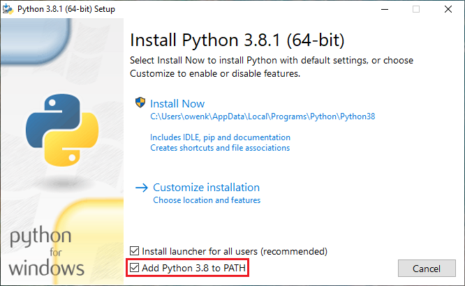

Today's lab will focus on using the Gradescope system and simple programs
in Python.
Software tools needed: web browser and Python IDLE programming
environment.
Using Blackboard
This course will use the on-line Blackboard system for course announcements, lecture previews, and posting grades. Blackboard should be accessible
through your CUNY First account (see Hunter ICIT Blackboard page for directions on using the system and how to get help).
The lecture previews can be found under the Content
menu (left hand side of Home screen).
Quizzes
Each week on Gradescope, there is an
quiz. This week, we will have a quiz on the academic integrity policy of City University of New York. See the
topics and deadlines for information about future quizzes and code reviews.
Using Python
We will be using the IDLE programming environment for Python, since it is very simple and comes with all distributions of Python (if you would prefer to use another programming environment, Spyder is loaded on the lab machines).
To launch IDLE:
Note: The following assumes you are working on one of our lab laptops (you can check out a laptop to work on in lab 1001E Hunter North) running the Ubuntu Linux distribution. If you are running another Unix-like operating system such as a different Linux distribution or MacOS, locate the terminal on your machine. If you are running on Windows, you can find instructions on how to obtain a Linux terminal on your computer at the bottom of Lab3. Instructions on how to install Python on your computer are provided at the bottom of this page.
- Click the icon on the left for the terminal. It will launch a terminal window in which you can type commands.
- In the terminal window, type:
idle
(followed by an enter/return).
- A new window will launch for IDLE.
- To see that it works, type at the IDLE prompt:
print("Hello, World!")
Instead of using the shell window (where we can try things immediately), let's use a text window, where we can save our program for later and submit it to Gradescope (this is the basis of the first program).
- First, open up a text window: on the menu bar, choose "File" and from that menu, choose "New File".
- In that window, type:
#Name: ...your name here...
#Email: ...your email here...
#Date: August 27, 2018
#This program prints: Hello, World!
print("Hello, World!")
- Save the program (using the "Save" under the "File" menu). When you save it, name it something that you will be remember for the future and end it in .py. For example, ps1.py. At the end of lab, save your programs to a USB drive, DropBox, or mail them to yourself.
- Run your program (using the "Run Module" from the "Run" menu).
- If it prints "Hello, World!" to the screen, then log into Gradescope (see notes below):
- On the left hand menu, choose "Assignments".
- From the list, choose "1. Hello, World!".
In the file upload, drag over the .py file you just created and ran, and
- click "Submit".
Using Gradescope
This course will use the on-line gradescope system for submitting
work electronically. An email invitation to the course was sent to your email address (we used the one saved for you on Blackboard). If you did not receive the email, one of the teaching staff can regenerate it for you.
- Open your email and click the links to set up your account.
- Once you have your account, click on the "Assignments" menu (left hand side of window), and then choose the assignment "1. Hello, World."
- Drag and drop your program onto the submit box.
- Click on confirmation button to submit your program. You will see a pop-up box confirming that the program was uploaded.
- In 30 to 60 seconds, the gradescope page will have your results (remember to put your name on the top of the file for full credit!).
- Each program can be submitted multiple times up to the deadline.
More Python: Turtles
Now that you have just submitted your first program, let's try some other Python commands. Here's a quick demo (click the triangle to run the program):
A quick overview of the above program:
- Lines that begin with # are ignored by Python-- they are comments for you to remember what you did and others to follow what's going on.
- The line import turtle loads in the built-in turtle graphics drawing package. It's part of all versions of Python but, to keep programs small, is not included unless you explicitly import it. In addition to built-in packages, there are many others that have been written to make Python more useful. We will use both kinds as the semester progresses.
- The line tia = turtle.Turtle() creates a turtle object called tia (you can call your turtles almost any combination of letters (and underscores and numbers)-- we used a name starting with "t" since turtle starts with "t").
- The next line: for i in range(4): is the first part of a for-loop that will repeat the commands indented beneath it 4 times.
- The turtle class has many functions that you can use for your turtle. The next two lines demonstrate two of them:
- tia.forward(150) moves tia forward 150 steps.
- tia.right(90) turns tia to the right 90 degrees.
Now, let's write the same program in IDLE:
- Open up a new file window in IDLE ("File > New File").
- Type (or copy) into your window:
import turtle
tia = turtle.Turtle()
for i in range(4):
tia.forward(150)
tia.right(90)
- Save your program ("File > Save").
Note: Choose a name for your file that is not turtle.py.
When executing the "import turtle" statement, the computer first looks in the folder where the file is saved for the turtle module and then in the libraries (and other places on the path). So, it thinks the module is itself, causing all kinds of errors. To avoid this, name your program something like "myTurtle.py" or "program2.py".
- Run your program (using the "Run Module" from the "Run" menu).
- Change your program so that it draws a decagon (10-sided polygon).
- Test your program and modify until you have a decagon. When you do, add comments at the top of your program:
#Name: ...your name here...
#Email: ...your email here...
#Date: August 25, 2017
#This program draws a decagon.
Run your program after editing to make sure you do not have any typos.
- Log into Gradescope (see notes above). On the left hand menu, choose "Assignments". From the list, choose "2. Decagon".
In the file upload, drag the .py file you just created and ran, and click "Submit".
More Turtle Commands
To review, we introduced the turtle commands:
as well as importing the turtle package (
import turtle) and creating ("instantiating") a turtle (
thomasH = turtle.Turtle()).
There are many more turtles commands. Over the next couple of classes, we will use those in the turtle chapter from the textbook. In addition to the ones that control movement, you can also change the color of the turtle, change the size of the drawing pen, and change the backbround color (by making a window or screen object, and changing it's color):
A complete list of turtle commands is part of the Python 3 documentation.
What's Next?
If you finish the lab early, now is a great time to get a head start on the programming problems. There are instructors to help you, and you already have Python up and running. The Programming Problem List has problem descriptions, suggested reading, and due dates next to each problem.
Using Python on Your Computer
The Python programming language and IDLE environment are freely available
for many platforms from
python.org.
For this class, we are using
Python 3. Many features of the language
(including the syntax of
print statements) changed between the second and third
version, so, you must use the Python 3 for submitting programs.
Linux:
If you have a Linux machine (Ubuntu or Debian based) and would like to match the environment on the lab machines, at a terminal window, type the following commands:
sudo apt update
sudo apt -y upgrade
sudo apt install python3 python3-pip idle3
pip3 install numpy pandas matplotlib scipy folium image
sudo apt install spyder3
Windows:
If you have a Windows computer, you can install python3 with the following instructions:
- Go to the following link.
- Click latest Python 3 release.
- Scroll down to the files section.
- Click Windows x86-64 executable installer and save the file.
- Once it is finished downloading, run the installer.
- Make sure you click Add Python to PATH (This makes it a lot easier to install Python packages).

- Click install now.
- If asked do you want to allow this app to make changes to your device, click yes.
- Wait until you see the setup was successful screen and then you can hit close.
You have successfully installed Python on your computer. To open IDlE, search IDLE in the Windows search bar.
macOS:
If you have a Mac computer, you can install python3 with the following instructions:
- Go to the following link.
- Click latest Python 3 release.
- Scroll down to the files section.
- Click macOS 64-bit installer and save the file.
- Once it is finished downloading, run the installer.
- Hit continue, continue again, continue again, and then agree.
- Click install.
- Enter your password or use TouchID if prompted.
- Wait until you see the installation was completed successfully screen and then you can hit close.
- You can keep the install or move it to the trash.
You have successfully installed Python on your computer. To open IDlE, search IDLE in Spotlight search or find it in Launchpad. To open IDLE from terminal, type idle3.
Python Packages:
You can install the Python packages used in this course with the following instructions:
- If on Windows, search cmd in the Windows search bar and open it. If on macOS, search terminal in Spotlight search and open it.
- Install the Python packages with the following command:
pip3 install numpy pandas folium image matplotlib scipy
These installation instructions were written by Owen Kunhardt. You can find the full guides at the following links: Windows macOS
Alternatively, there are many free on-line versions that you could use via a browser, such as pythonanywhere.